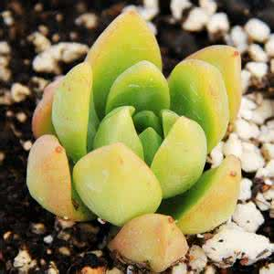

夏天眼看着要过去了，又到了大家收获花盆的季节了，如果你收获了很多花盆，千万要总结总结自己为什么收获这么多花盆，免得以后花盆多得放不下。
度夏的要点非常的陈词滥调：通风、遮阳、控水。
肉肉在春秋长势最旺盛，如果可以给它营造一个接近春秋的环境，它一定生长欢快。十几二十的温度和晒了舒服的阳光，是它们最喜欢的，有条件的尽管向这样的方向努力。
我对多肉化水的理解是有害菌繁殖过量，导致某种平衡被打破。孔老先生说“过犹不及”,多了少了都不是好事。（这边纯属个人臆测= =,求专业人士更专业的说法）微生物是普遍存在的，其中的有害菌也是普遍存在的，区别只是数量的多少，如果不过量，植物本身可以抵御它们。夏天东西容易腐坏，可见高温、高湿有利于微生物的生长、繁殖。另外夏季高温使多肉本身变得比较弱，更容易生病。我们平时浇水都提倡干透浇透，在两次浇水之间，土壤能够干到使部分有害菌失去活力，实现一定的灭菌效果。所以连续浇水等于是创造一个有害菌持续繁殖的环境，容易使多肉化水。而夏季的高温使有害菌繁殖速度变得很快，浇水变成一件危险的事，所以控水变得很重要，要浇水也最好选择相对温度低一点的时候，降温的时候，晚上的时候等。 夏季浇水我一般都是沿盆边浇水，尽量避开杆子和叶子，水量也比春秋要少，如果叶子浇湿了，我一定会用吹耳球把水吹掉。夏天通风的作用之一也是为了使土壤快速变干，防止高温高湿条件持续（另一个作用是降温）。顺便一说，多肉根部有伤口要晾根，也是防止土壤里的有害菌直接从伤口侵入多肉体内。